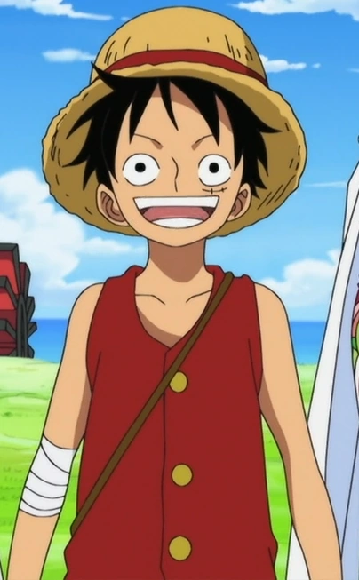
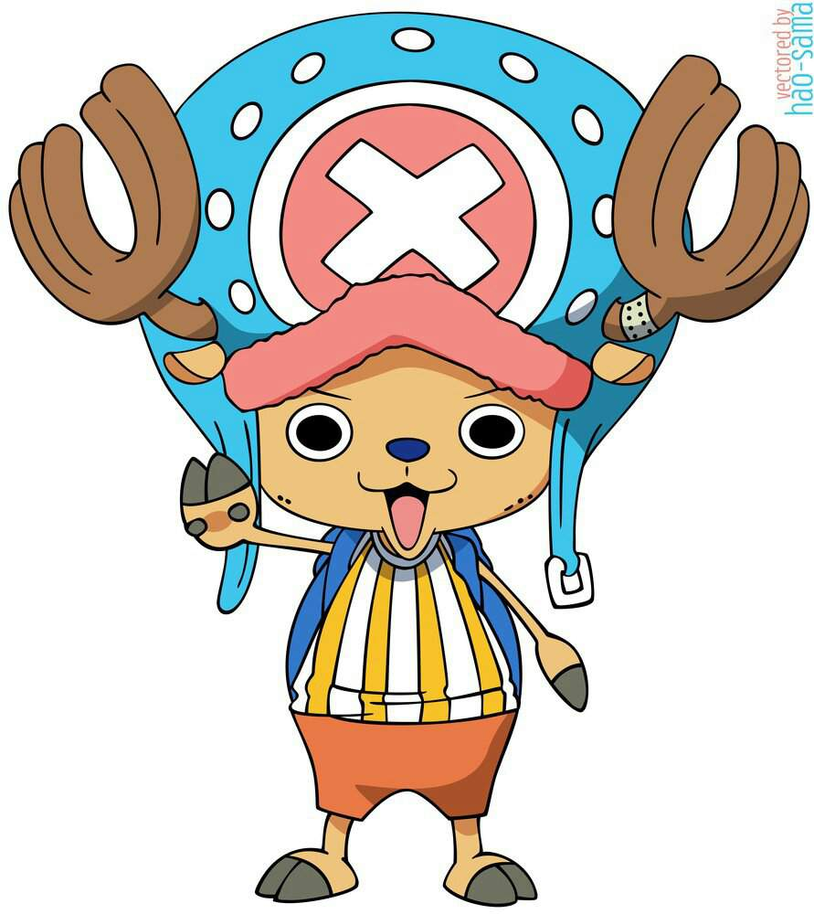

Llistat tripulació del Barret de Palla
- Monkey D. Ruffy
- El capità, conegut pel sobrenom de Ruffy Barret de Palla. El seu objectiu és convertir-se en el Rei dels Pirates, trobant el tresor llegendari deixat per l'antic Rei dels Pirates Gol D. Roger. Va menjar la fruita Gomu Gomu no Mi, cosa que el converteix en un home de goma. Surt del seu poble al East Blue i emprèn un viatge a través de la Grand Line, reunint una tripulació al seu voltant coneguda com els Pirates del Barret de Palla, que s'enfronta a nombrosos enemics. És un noi amant de la diversió i alegre, amb una gran ambició i una gran gana.
- Roronoa Zoro
- Va ser el primer membre que es va unir als Pirates del Barret de Palla i està considerat la pitjor amenaça i el membre més perillós després d'en Ruffy. És un dels tres millors lluitadors de la tripulació, juntament amb en Ruffy i en Sanji, i el seu somni és convertir-se en el millor espadatxí del món. Gairebé sempre porta al seu costat les seves tres espases. S’ha entrenat des de la infància en l'ús de l'espasa, desenvolupant un estil de lluita únic de tres espases, que en té una amb la boca.
- Nami
- Amb el sobrenom de Gata Lladre, és l'oficial dels Pirates del Barret de Palla. Va ser el tercer membre de la tripulació i la segona a unir-s'hi. Va ser membre dels Pirates de l'Arlong i inicialment es va unir als Pirates del Barret de Palla per robar-los. El seu somni és dibuixar un mapa de tot el món. Posseeix un bastó creat per l'Usopp que usa com a arma, conegut com Sorcery Clima-Tact, que li permet controlar els diversos elements del clima.
- Usopp
- És el franctirador dels Pirates del Barret de Palla. És el quart membre de la tripulació i el tercer en unir-s'hi. El seu somni és arribar a ser un gran pirata com el seu pare Yasopp, tripulant de la banda de pirates de Shanks el Pèl-roig. És el responsable que la banda d'en Ruffy obtingués el vaixell Going Merry. És un covard, un mitòman i un mentider compulsiu.
- Vinsmoke Sanji
- Inicialment cuiner al restaurant flotant Baratie, en Sanji s’uneix als Pirates del Barret de Palla com el cuiner de la tripulació, encoratjat pels seus col·legues i el seu mentor Zeff a posar-se a la mar per perseguir el seu somni: trobar el llegendari All Blue. Per conservar les mans per cuinar, lluita només utilitzant les cames. Fumador àvid, és extremadament galant i se sent atret pel sexe més net.
- Chopper
- És el metge dels Pirates del Barret de Palla. És un ren de nas blau que va menjar la fruita Hito Hito, adquirint forma i intel·ligència humana. Procedent de l'illa de Drum, és el sisè membre de la tripulació i el cinquè a unir-s'hi al final de l'arc de Drum.
- Nico Robin
- També coneguda com la Nena Dimoni. És l'arqueòloga dels Pirates del Barret de Palla, és el setè membre de la tripulació i el sisè a unir-se, fent-ho al final de l'arc d'Arabasta. Va deixar temporalment la tripulació durant l'arc de Water 7, però es va reincorporar durant l'arc d'Enies Lobby. El seu somni és conèixer la veritable història investigant en els poneglyphs. Va consumir la fruita Hana Hana, que li brinda al seu consumidor la capacitat de fer «florir» qualsevol part del seu cos en qualsevol superfície.
- Franky
- Sobrenomenat l'Home de Ferro, és el fuster naval dels Pirates del Barret de Palla i un dels oficials principals de la Gran Flota del Barret de Palla. És el vuitè membre de la tripulació i el setè a unir-se, fent-ho al final de l'arc de retorn a Water 7. Originari del South Blue, en Franky va ser un membre dels Tom's Workers, fins que un incident que va danyar el seu cos li va requerir convertir-se en un ciborg per curar-se. Posteriorment es convertiria en el líder de la família Franky.
- Brook
- També conegut com Soul King. És el músic dels Pirates del Barret de Palla i un dels seus dos espadatxins. És el novè membre de la tripulació i el vuitè a unir-se, fent-ho al final de l'arc de Thriller Bark. Originari del West Blue, en Brook va exercir de guàrdia reial d'un regne i posteriorment es faria membre dels Pirates Rumbar. Va morir i va ressuscitar gràcies al poder de la seva fruita Yomi Yomi. No obstant això, a causa del temps que va trigar la seva ànima a trobar el seu cos, va quedar reduït a un esquelet. Va aprendre amb el temps a aprofitar més profundament els poders de la seva fruita del Diable, donant-li un control significatiu sobre la seva pròpia ànima i les ànimes dels altres.
- Jinbe
- El Cavaller del Mar Jinbe és el timoner dels Pirates del Barret de Palla i un dels oficials principals de la Gran Flota del Barret de Palla, sent el desè membre de la tripulació i el novè a unir-se. És un gyojin tauró balena, que va servir com a antic capità dels Pirates del Sol i com a membre dels Set Senyors de la Guerra del Mar (Shichibukai). Durant la guerra de Marineford va fer amistat amb Monkey D. Ruffy, més tard s’alià amb ell i finalment és convidat a unir-se a la tripulació al final de l’arc de retorn a Water 7arc de Whole Cake Island.



